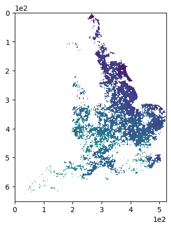

Ecological Data Science for Sustainable Agriculture (Part IV)#
# Vector processing
import geopandas as gpd
import shapely
import osgb
# Raster processing
import rasterio
import rasterio.warp
import rasterio.mask
import rasterio.plot
import rasterio.features
import rasterio.sample
from rasterio import windows
import pyproj
import xarray as xr
import rioxarray
# Calcs and modelling
import numpy as np
import pandas as pd
# Visualisation
import matplotlib as mpl
from matplotlib import pyplot as plt
import contextily as cx
import seaborn as sns
%matplotlib inline
mpl.rcParams['axes.formatter.limits'] = (0,0)
FIGSIZE = (10, 7)
# Practical
from glob import glob
import warnings
import os
from pystac_client import Client
import boto3
from dask.distributed import Client as DaskClient
from dask.distributed import print as distributed_print
import subprocess
import functools
import sys
sys.path.append('../../../../git_packages/PhenoloPy/scripts')
import phenolopy
from scipy.stats import pearsonr
warnings.filterwarnings('ignore')
pd.set_option('display.max_rows', 500)
pd.set_option('display.max_columns', 500)
DATA_BASE_PATH = '../../../data/Agric_data/' # all data under this path (global)
with rasterio.open(os.path.join(DATA_BASE_PATH, 'IYR/data/input_to_yield_ratio_honeybees.tiff')) as file:
iyr_bees = file.read(1)
iyr_nodata = file.profile['nodata']
WORKING_CRS = file.crs
extent = [file.bounds.left, file.bounds.right, file.bounds.bottom, file.bounds.top]
iyr_bees = np.where(iyr_bees == iyr_nodata, np.nan, iyr_bees)
plt.figure()
plt.imshow(iyr_bees, interpolation=None)
plt.show()

sample_data = gpd.read_file(os.path.join(DATA_BASE_PATH, 'Pollinator_Fit_Counts/data/ukpoms_publicfitcountdata_2017-2020.csv' ),
encoding='unicode_escape'
)
sample_data[['bumblebees',
'honeybees',
'solitary_bees',
'wasps',
'hoverflies',
'other_flies',
'butterflies_moths',
'beetles',
'insects_small',
'insects_other',
'all_insects_total']] = sample_data[['bumblebees',
'honeybees',
'solitary_bees',
'wasps',
'hoverflies',
'other_flies',
'butterflies_moths',
'beetles',
'insects_small',
'insects_other',
'all_insects_total']].astype(int)
sample_data['month'] = sample_data['date'].str.split('/').str[1]
def parse_grid_handle_error(x1km_ref):
try:
return osgb.gridder.parse_grid(x1km_ref)
except:
return None
def grid_to_ll_handle_error(grid_ref):
try:
return osgb.grid_to_ll(grid_ref)
except:
return (np.nan, np.nan)
sample_data['X1km_centre'] = sample_data['X1km_square'].str[:4].str.cat(sample_data['X1km_square'].str[4:], sep='5') + '5'
sample_data['geometry'] = sample_data['X1km_centre'].apply(parse_grid_handle_error).apply(grid_to_ll_handle_error).apply(lambda x: (x[1], x[0])).apply(shapely.geometry.Point)
sample_data = sample_data[~sample_data['geometry'].is_empty]
sample_data.set_crs('EPSG:4326', inplace=True).to_crs(WORKING_CRS, inplace=True)
extent
[132000.0, 656000.0, 6000.0, 658000.0]
WORKING_CRS
CRS.from_epsg(27700)
%matplotlib widget
fig, ax= plt.subplots(figsize=(5, 8))
ax.imshow(iyr_bees, interpolation=None, extent=extent)
sample_data.plot(ax=ax, )
ax.set_xticks([])
ax.set_yticks([])
plt.show()
sample_data.plot.box(column='honeybees', by='month', sym='')
honeybees Axes(0.125,0.11;0.775x0.77)
dtype: object
sample_data
| sample_id | country | date | year | X1km_square | sample_projection | digitised_by | recorder_type | habitat | habitat_other_detail | target_flower | target_flower_corrected | target_other_name | target_other_name_corrected | target_flower_family | flower_cover | floral_unit_count | floral_unit | flower_context | count_start_time | cloud_cover | sunshine | wind_speed | enjoyment | difficulty | habitat_type | flower_structure | bumblebees | honeybees | solitary_bees | wasps | hoverflies | other_flies | butterflies_moths | beetles | insects_small | insects_other | all_insects_total | geometry | X1km_centre | month | |
|---|---|---|---|---|---|---|---|---|---|---|---|---|---|---|---|---|---|---|---|---|---|---|---|---|---|---|---|---|---|---|---|---|---|---|---|---|---|---|---|---|---|
| 0 | 3501506 | England | 05/05/2018 | 2018 | SK3648 | OSGB | 86644 | I am familiar with recognising the main groups... | Garden | NA | Dandelion - Taraxacum officinale | Dandelion - Taraxacum officinale | NA | NA | Asteraceae | Target flowers cover less than half of patch | 6 | flower head | Growing in a larger patch of the same flower | 11:55 | All or mostly blue | Entirely in sunshine | Leaves moving gently all the time | Fun | Very easy | garden | open | 0 | 0 | 0 | 0 | 0 | 0 | 0 | 0 | 0 | 0 | 0 | POINT (436500.084 348502.088) | SK365485 | 05 |
| 1 | 3493125 | England | 05/05/2018 | 2018 | SK9482 | OSGB | 154133 | I am familiar with identifying some wildlife g... | Garden | NA | Hawthorn - Crataegus | Hawthorn - Crataegus | NA | NA | Rosaceae | Target flowers cover about half of patch | 22 | individual flower | Growing in a larger patch of the same flower | 15:01 | All or mostly blue | Entirely in sunshine | Leaves moving gently all the time | Really fun! | Okay | garden | open | 0 | 0 | 0 | 0 | 0 | 2 | 0 | 0 | 0 | 0 | 2 | POINT (494499.828 382502.407) | SK945825 | 05 |
| 2 | 3455170 | England | 05/05/2018 | 2018 | SP0380 | OSGB | 73313 | I am familiar with recognising the main groups... | Garden | NA | Other - please describe below | Other - please describe below | Pulmonaria | Pulmonaria | Boraginaceae | Target flowers cover about half of patch | 15 | individual flower | Growing in a larger patch of many different fl... | 15:47 | All or mostly blue | Partly in sun and partly shaded | Leaves still/moving occasionally | Okay | Easy | garden | closed | 0 | 0 | 0 | 0 | 0 | 0 | 0 | 0 | 0 | 0 | 0 | POINT (403500.416 280501.592) | SP035805 | 05 |
| 3 | 3455025 | England | 05/05/2018 | 2018 | ST3109 | OSGB | 156295 | I am familiar with recognising the main groups... | Grassland with wild flowers (e.g. meadow) | NA | Buttercup (Ranunculus species) | Buttercup (Ranunculus species) | NA | NA | Ranunculaceae | Target flowers cover less than half of patch | 10 | individual flower | Growing in a larger patch of the same flower | 14:36 | Half blue and half cloud | Entirely in sunshine | Leaves moving gently all the time | NA | NA | semi-natural | open | 0 | 0 | 0 | 0 | 0 | 3 | 0 | 0 | 0 | 0 | 3 | POINT (331499.557 109499.046) | ST315095 | 05 |
| 4 | 3501609 | England | 19/05/2018 | 2018 | SK3648 | OSGB | 86644 | I am familiar with recognising the main groups... | Garden | NA | Dandelion - Taraxacum officinale | Dandelion - Taraxacum officinale | NA | NA | Asteraceae | Target flowers cover less than half of patch | 1 | flower head | More or less isolated | 12:18 | Half blue and half cloud | Entirely in sunshine | Leaves still/moving occasionally | Fun | Very easy | garden | open | 0 | 0 | 0 | 0 | 0 | 0 | 0 | 0 | 0 | 0 | 0 | POINT (436500.084 348502.088) | SK365485 | 05 |
| ... | ... | ... | ... | ... | ... | ... | ... | ... | ... | ... | ... | ... | ... | ... | ... | ... | ... | ... | ... | ... | ... | ... | ... | ... | ... | ... | ... | ... | ... | ... | ... | ... | ... | ... | ... | ... | ... | ... | ... | ... | ... |
| 3348 | 5619475 | England | 04/05/2019 | 2019 | SK3648 | OSGB | 86644 | I am familiar with recognising the main groups... | Garden | NA | Dandelion - Taraxacum officinale | Dandelion - Taraxacum officinale | NA | NA | Asteraceae | Target flowers cover less than half of patch | 4 | flower head | Growing in a larger patch of the same flower | 15:23 | Half blue and half cloud | Partly in sun and partly shaded | Leaves still/moving occasionally | Fun | Easy | garden | open | 0 | 0 | 0 | 0 | 0 | 0 | 0 | 0 | 0 | 0 | 0 | POINT (436500.084 348502.088) | SK365485 | 05 |
| 3349 | 5600657 | England | 22/04/2019 | 2019 | SK3584 | OSGB | 202018 | I am confident in identifying the commonly-occ... | Garden | NA | Dandelion - Taraxacum officinale | Dandelion - Taraxacum officinale | NA | NA | Asteraceae | Target flowers cover less than half of patch | 14 | flower head | Growing in a larger patch of many different fl... | 12:42 | All or mostly blue | Partly in sun and partly shaded | Leaves moving gently all the time | Okay | Very easy | garden | open | 0 | 0 | 0 | 0 | 0 | 0 | 0 | 0 | 0 | 0 | 0 | POINT (435500.007 384502.031) | SK355845 | 04 |
| 3350 | 5600656 | England | 09/04/2019 | 2019 | SK3584 | OSGB | 202018 | I am confident in identifying the commonly-occ... | Garden | NA | Dandelion - Taraxacum officinale | Dandelion - Taraxacum officinale | NA | NA | Asteraceae | Target flowers cover less than half of patch | 14 | flower head | Growing in a larger patch of many different fl... | 12:42 | All or mostly blue | Partly in sun and partly shaded | Leaves moving gently all the time | Okay | Very easy | garden | open | 0 | 0 | 0 | 0 | 0 | 0 | 0 | 0 | 0 | 0 | 0 | POINT (435500.007 384502.031) | SK355845 | 04 |
| 3351 | 5579063 | England | 01/05/2019 | 2019 | SJ8094 | OSGB | 70693 | I am familiar with identifying some wildlife g... | Parkland with trees | NA | Dandelion - Taraxacum officinale | Dandelion - Taraxacum officinale | NA | NA | Asteraceae | Target flowers cover less than half of patch | 10 | flower head | More or less isolated | 16:13 | All or mostly cloud | Entirely shaded | Leaves still/moving occasionally | NA | NA | agricultural | open | 0 | 0 | 0 | 0 | 0 | 0 | 0 | 0 | 0 | 0 | 0 | POINT (380499.956 394501.861) | SJ805945 | 05 |
| 3352 | 5351009 | England | 11/04/2019 | 2019 | SK3648 | OSGB | 86644 | I am familiar with recognising the main groups... | Garden | NA | Dandelion - Taraxacum officinale | Dandelion - Taraxacum officinale | NA | NA | Asteraceae | Target flowers cover less than half of patch | 2 | flower head | More or less isolated | 15:32 | All or mostly blue | Entirely in sunshine | Leaves still/moving occasionally | Fun | Very easy | garden | open | 0 | 0 | 0 | 0 | 0 | 0 | 0 | 0 | 0 | 0 | 0 | POINT (436500.084 348502.088) | SK365485 | 04 |
3268 rows × 41 columns
# Build an SDM based on sample data (taking into account the various categorical factors, properly encoded)
# Compare against IYR and identify hotspots - areas where there are high biodiversity metrics and also a high ratio of pesticide/yield
# Read this:
# https://nsojournals.onlinelibrary.wiley.com/doi/epdf/10.1111/ecog.05694
# Get relevant layers for UK covariates and whack together an SDM workflow